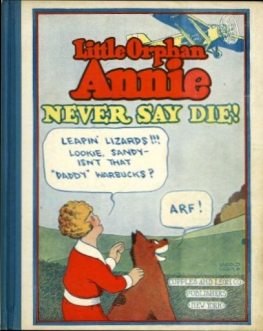
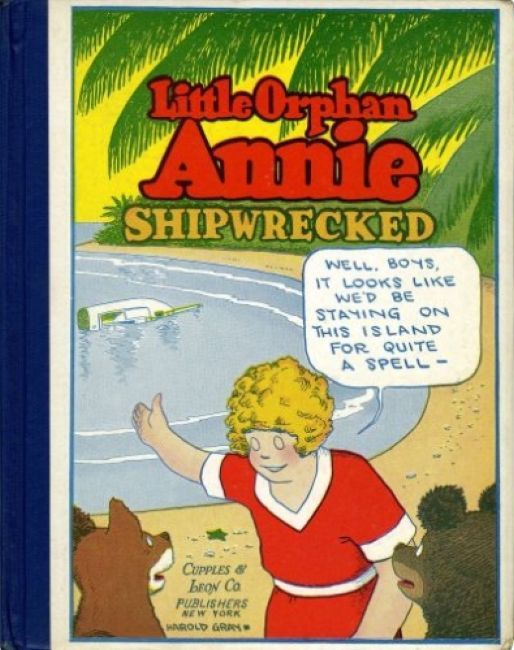
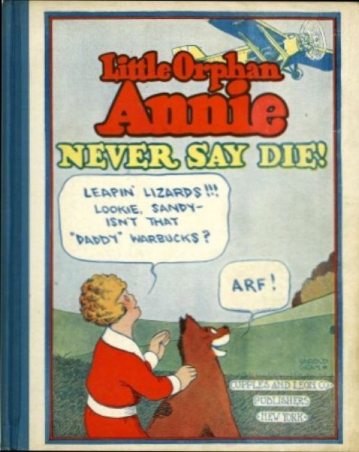
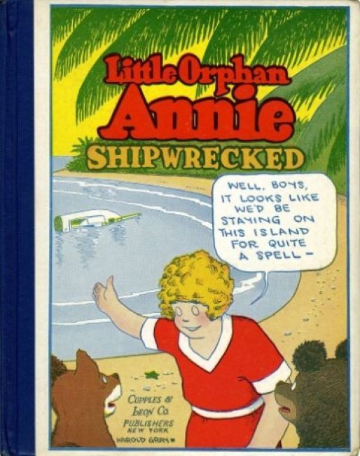
 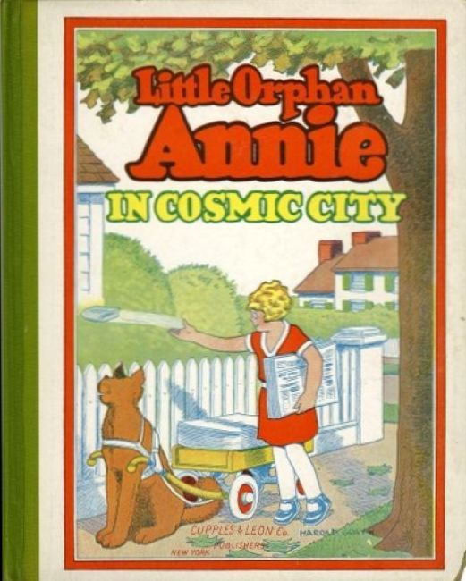
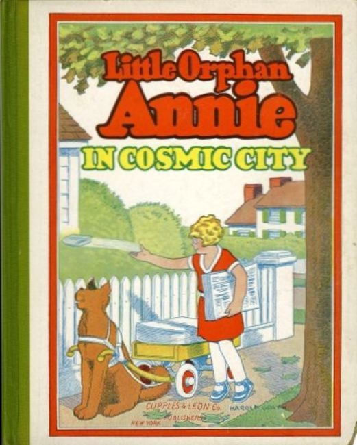
 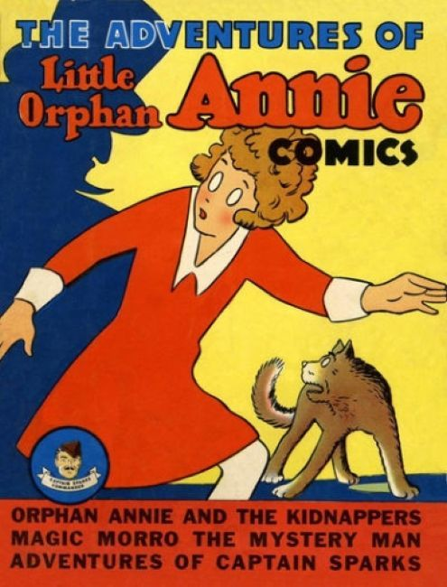
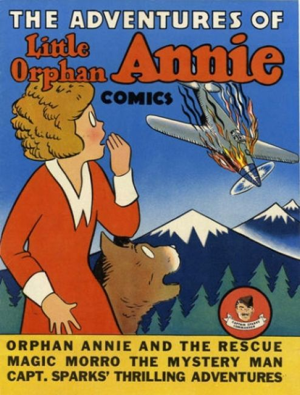
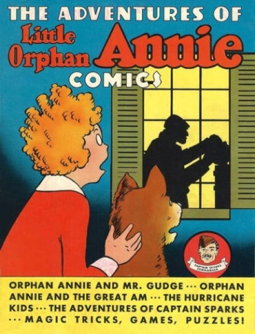
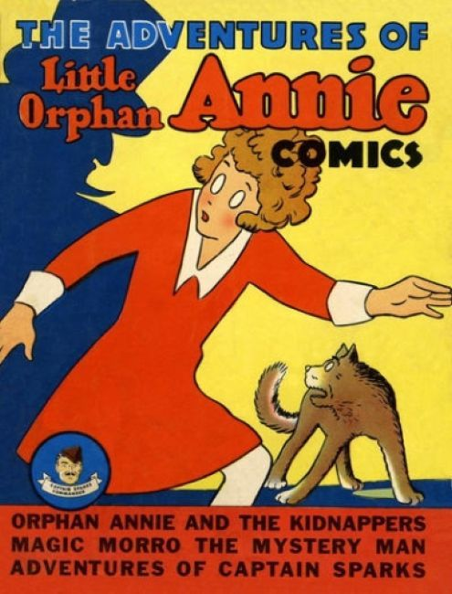
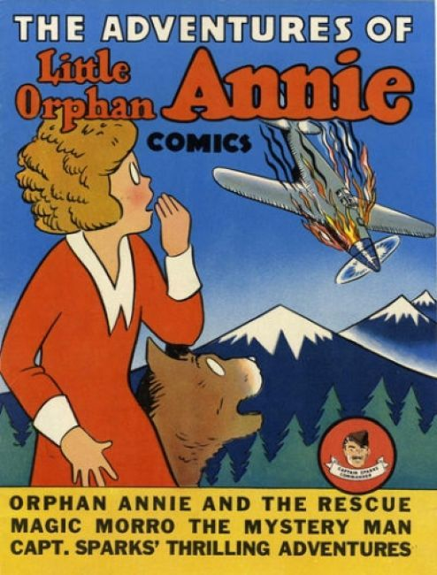
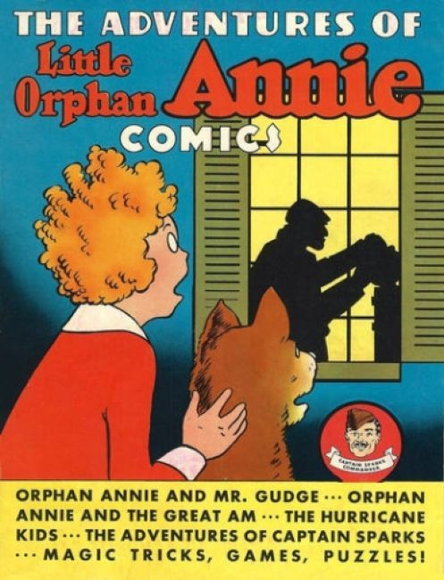
About:
Little Orphan Annie is a daily American comic strip created by Harold Gray and syndicated by the Tribune Media Services. The strip took its name from the 1885 poem "Little Orphant Annie" by James Whitcomb Riley, and made its debut on August 5, 1924, in the New York Daily News.
The plot follows the wide-ranging adventures of Annie, her dog Sandy and her benefactor Oliver "Daddy" Warbucks. Secondary characters include Punjab, the Asp and Mr. Am. The strip attracted adult readers with political commentary that targeted (among other things) organized labor, the New Deal and communism.
Following Gray's death in 1968, several artists drew the strip and, for a time, "classic" strips were reruns. Little Orphan Annie inspired a radio show in 1930, film adaptations by RKO in 1932 and Paramount in 1938 and a Broadway musical Annie in 1977 (which was adapted into a film of the same name three times, one in 1982, one in 1999 and another in 2014).
The strip's popularity declined over the years; it was running in only 20 newspapers when it was cancelled on June 13, 2010. The characters now appear occasionally as supporting ones in Dick Tracy.
Story:
The story opens in a dreary and Dickensian orphanage where Annie is routinely abused by the cold and sarcastic matron Miss Asthma, who eventually is replaced by the equally mean Miss Treat (a play on the word mistreat).
One day, the wealthy but mean-spirited Mrs. Warbucks takes Annie into her home "on trial." She makes it clear that she does not like Annie and tries to send her back to "the Home", but one of her society friends catches her in the act, and immediately, to her disgust, she changes her mind.
Her husband Oliver, who returned from a business trip, instantly develops a paternal affection for Annie and instructs her to address him as "Daddy." Originally, the Warbucks had a dog named One-Lung, who liked Annie. Their household staff also takes to Annie and they like her.
However, the staff despises Mrs. Warbucks, the daughter of a nouveau riche plumber's assistant. Cold-hearted Mrs. Warbucks sends Annie back to "the Home" numerous times, and the staff hates her for that.
"Daddy" (Oliver) keeps thinking of her as his daughter. Mrs. Warbucks often argues with Oliver over how much he "mortifies her when company comes" and his affection for Annie. A very status-conscious woman, she feels that Oliver and Annie are ruining her socially. However, Oliver usually is able to put her in her place, especially when she criticizes Annie.
By the 1930s, during the Great Depression, the formula was tweaked: Daddy Warbucks lost his fortune due to a corrupt rival and ultimately died from despair at the election of Franklin D. Roosevelt.
Annie remained an orphan, and for several years had adventures that involved more internationally based enemies. The contemporary events taking place in Europe were reflected in the strips during the 1940s and World War II. Daddy Warbucks was reunited with Annie, as his death was changed to coma, from which he woke in 1945.
By this time, the series enlarged its world with the addition of characters such as Asp and Punjab, bodyguards and servants to Annie and Daddy Warbucks. In world-trotting adventures, the characters traveled around the world, with Annie having adventures on her own or with her adopted family.